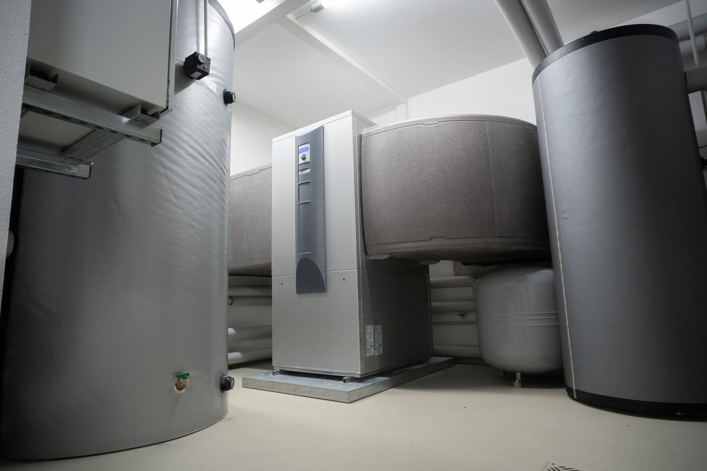

In a commercial building, hot water is not an amenity; it is part of how the place runs. A restaurant needs it to wash dishes and hands at the temperatures the health inspector expects. A laundromat moves huge volumes of it through a busy weekend. A salon runs shampoo bowls back to back all day, a gym's locker room faces a shower rush after every class, and an apartment building has dozens of households showering in the same hour before work. That is why commercial equipment looks so different from a home tank: higher gas input or multiple heavy elements, fast recovery, larger storage, and often recirculation to keep hot water close to every fixture. When any part of it falters in Mesquite, TX, the cost is counted in lost hours, not just repair bills.
Our team treats commercial work in Mesquite as its own discipline rather than a bigger version of residential service. Sizing starts with your real peak demand and the recovery rate needed to meet it, not a catalog guess. We repair and replace commercial gas and electric tanks, tankless racks, and indirect storage fed by boilers, and we service recirculation pumps, check valves, and balancing valves so hot water arrives fast at the far end of the building. Sanitation matters too: storage is often held at 140 degrees or higher to discourage bacteria, while thermostatic mixing valves deliver safer temperatures at hand sinks and showers. We check those valves, because a failing mixer can send scalding water to a tap or starve the building of heat.
Your schedule comes first. Replacements are arranged before opening, after closing, or on the slowest day of your week, and where the system has more than one heater, we keep at least one running while the other is serviced. Commercial jobs carry extra requirements, and we handle the coordination: permits and inspections, verifying gas supply and vent sizing, and meeting code requirements for larger equipment. For commercial water heater service in Mesquite that respects your operating hours, call (972) 975-6312.
Most of our service calls are for Water Heater Installation in Mesquite and Water Heater Replacement in Mesquite. That's the place to start for most homes.

When to Call for Commercial Water Heaters
Most tanks announce trouble weeks or months ahead with rumbling noises, rusty water, or hot showers that keep getting shorter. These are the red flags our technicians see most often before a breakdown:
- Scalding bursts or wild temperature swings at showers or sinks
- The tank giving up in the middle of a rush
- Water temperatures that worry you before a health inspection
- Long waits for hot water at sinks far from the heater
- Loud sediment noise from equipment that runs all day
- An aging unit you would rather replace on your schedule than in an emergency
- Rusty water or damp spots around the equipment
- Rising gas or electric bills with no change in business volume
Small Symptoms, Big Consequences
A little rust-colored water or a relief valve that drips now and then can be the first hint of a tank that is close to the end. Don't wait. Get Mesquite Water Heater on the phone at (972) 975-6312 and we'll get a technician scheduled.
Talk to Us About Commercial Water Heaters
Our experienced technicians are standing by to help.
Call (972) 975-6312 TodayCommon Questions We Hear
Why Professional Commercial Water Heaters Matters
Commercial water heating asks more of the installer. Large gas inputs require confirming the supply pressure, meter size, combustion air, and vent capacity. Commercial electric units may need dedicated high-amperage circuits. High storage temperatures, commonly 140 degrees or above for sanitation, depend on thermostatic mixing valves to bring delivery down to safe levels at hand sinks and showers. Recirculation adds pumps, timers, and check and balancing valves that need proper adjustment for hot water to reach every fixture on time.
On top of the technical side come code and timing. Commercial installations usually involve permits, inspections, and sometimes additional requirements for larger vessels, and a job that fails inspection can leave a business without hot water for days. Our experienced technicians coordinate those steps before the old unit comes out, schedule work around your operating hours, and stage swaps on multi-unit systems so you are never fully without hot water. That planning is where the real value lies: the right equipment, installed to code, on a timeline that protects your revenue.
What to Expect From Our Team
Good water heater work comes down to a consistent routine, and ours starts with a real diagnosis instead of a guess. Here's the short version:
Demand Assessment
Dish machines, washers, shampoo bowls, and showers all get counted, so the recommendation matches your real rush rather than the old nameplate.
System Design
For businesses that cannot go without, we design multi-heater layouts so one heater can be serviced while the other carries the load.
Low-Downtime Install
Installation is timed for early mornings, after close, or slow days, with staged swaps on multi-unit systems to keep hot water available.
Testing and Upkeep
We verify temperatures in the tank and at the taps, test mixing valves and recirculation, and set up a maintenance schedule matched to your usage.
Want a Professional Opinion?
Call Mesquite Water Heater to talk through your situation with an experienced technician.
Tap to Call (972) 975-6312Simple Ways to Extend Your Water Heater's Life
Routine maintenance is almost always cheaper and easier than an early replacement. Here are our recommendations:
- Log water temperatures at key fixtures so drift is caught early
- Flush commercial tanks more often than residential ones, often every few months in heavy use or hard water
- Plan replacement before an aging unit fails during peak season
- Keep the area around the heaters clear for combustion air and service access
- Keep recirculation pumps and check valves in service to avoid long waits and wasted energy
- Verify delivery temperatures at sinks and showers a few times a year
- Replace consumed anode rods before the tank itself starts to corrode
Doing It Yourself vs. Hiring a Technician
The line between a safe DIY check and a risky repair is usually the moment you need to open a gas fitting, a vent connection, or an electrical cover. Here's how the two approaches stack up:
| Consideration | Doing It Yourself | Professional Service |
|---|---|---|
| Sizing | Copy the old nameplate | Matched to real usage |
| Combustion Air | Supply line and vent capacity unchecked | Capacity confirmed before install |
| Mixing Valves | Tank turned up with no mixing valve | Mixing valves sized and verified |
| Recirculation | Loop never balanced | Fast hot water at every fixture |
| Permits and Inspection | Permit skipped or delayed | Permits and inspections coordinated |
| Scheduling | No backup hot water | Work scheduled around your hours |
Let's Get Your Hot Water Back
Every day a leak or a failing part goes unchecked puts more stress on the tank. Get Mesquite Water Heater on the job today.
Call (972) 975-6312 NowCommercial Water Heaters Across the Mesquite Area
We bring commercial water heaters to homes and businesses in town and across the nearby communities. Pick your area to see local details.